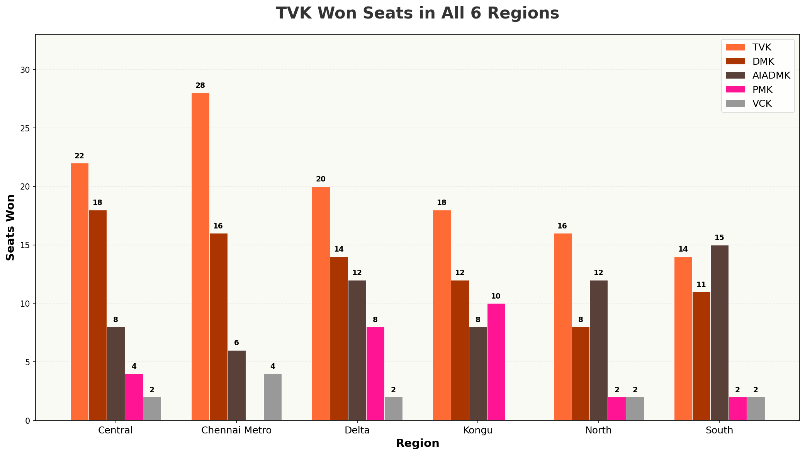
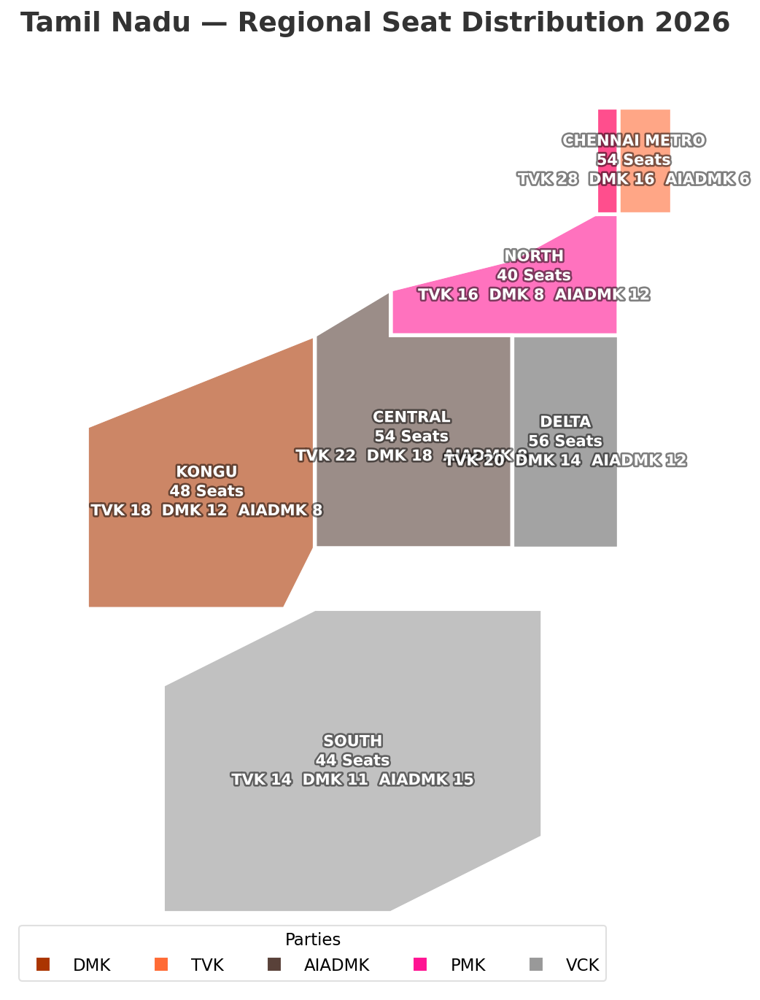
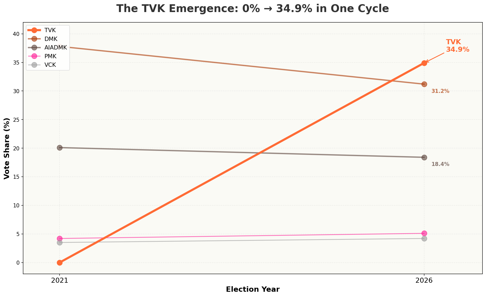

143 SEATS FLIPPED —
61% OF TAMIL NADU
CHANGED HANDS
A brand-new party captured 34.9% of the vote and flipped 143 constituencies in a single election. The most disruptive result Tamil Nadu has seen in decades. Here is the data behind the reshaping.
Out of 234 constituencies, 143 flipped to a different party. That's 61.5% seat turnover — the highest in Tamil Nadu's recent electoral history.
A brand-new entrant captured over a third of the state's vote. In 2021, TVK did not exist as an electoral force. In 2026, it leads.
TVK won seats in all six regions — Chennai Metro, North, Central, Kongu, Delta, South. This was not a localized surge but a statewide realignment.
Where Did 143 Flipped Seats Go?
DMK lost 56 seats directly to TVK. AIADMK lost 22. The two-party duopoly collapsed as votes fragmented across three major players. This Sankey traces every seat that changed hands.
Top 5 seat transitions shown (143 total flips across all parties)
TVK Won Seats in All Six Regions
This wasn't a localized surge — TVK built a statewide footprint from Chennai Metro to Kanniyakumari, winning seats in every region. DMK held ground in Delta and Central. AIADMK nearly vanished across the board.

Drill down into the heart of the electorate.
Select a region below to see the detailed seat distribution. Each column shows how TVK, DMK, AIADMK, and others performed across the six zones.
Loading...
High CompetitionSelect a region to view detailed seat distribution across all major parties.

From Zero to 34.9% — One Cycle, One Party
In 2021, TVK did not exist as an electoral force. In 2026, it captured over a third of the state's vote. DMK and AIADMK both lost significant ground as the electorate fragmented across three major players.

Three Questions, One Story
The analysis set out to answer three questions about the 2026 election. Here is what the data revealed.
How did seat distribution shift across regions?
TVK won seats in all 6 regions, proving state-wide disruption. DMK held Delta and Central. AIADMK nearly collapsed everywhere. The old regional strongholds dissolved into a three-way contest across every zone.
In how many constituencies did the winner change?
143 constituencies flipped — 61.5% of the total. DMK lost 56 seats directly to TVK, AIADMK lost 22. The Sankey diagram visualizes every seat movement, and the thickest flows run from both incumbents to the new entrant.
Where did TVK’s votes come from?
TVK went from 0% to 34.9% in one cycle, pulling from both incumbents. DMK dropped 13.5 percentage points. AIADMK dropped 12.1. The two-party duopoly that defined Tamil Nadu for decades became a three-party system overnight.
Three Insights That Explain the Earthquake
Unprecedented Disruption
143 flips (61% turnover) is historic for Tamil Nadu. No election in the last three decades has seen this level of seat churn. When a new entrant captures 35% of the vote, the old order doesn't just shift — it fractures.
Multi-Region Success
TVK won seats in all 6 regions. This wasn't a caste-based or district-level wave — it was a complete restructuring of how votes split across the state. TVK built the most geographically diverse coalition Tamil Nadu has seen from a new entrant.
Vote Fragmentation
The two-party system is gone. Three parties now control 80% of the vote. DMK fell from 37.8% to 31.2%. AIADMK dropped from 20.1% to 18.4%. The traditional duopoly that defined Tamil Nadu politics for decades has been replaced by a three-way contest.
“The 2026 Tamil Nadu election was not a shift — it was a reset. One new party, 143 flipped seats, and a two-party system replaced by a three-way contest. The data tells a story of unprecedented disruption, and the old order has not simply changed — it has been replaced.”
All data sourced from the Election Commission of India. Analysis reproducible via the project GitHub repository.